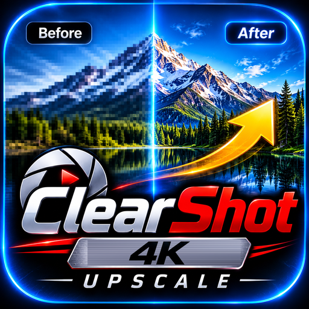

MADE BY MAYURMADE BY MAYUR
4K Upscale
Every frame scaled on this phone. Nothing is uploaded.
Filter
Output format
Export quality
Output4K · 3840 × 2160
Sharpen
Stabilize shake
Keep original audio
0%
Ready
Save file
Keep this screen on while it runs. It runs at real-time speed: a 10-minute clip takes 10 minutes.